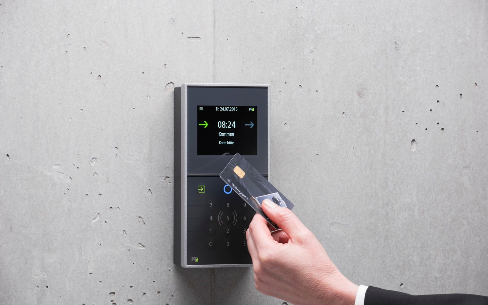

InfrastructureManual audits are slow, expensive, and often out of date before the work is complete - creating topology debt that spreads across teams.
Read article →Defensible infrastructure inventory starts with traceable evidence, not static records or assumptions.
Read article →
SecurityNetwork tools see what is active on the network, not what is physically in the rack. That gap is where risk accumulates.
Read article →SOC 2 Type II requires continuous evidence of asset control. Here is how teams can generate it systematically.
Read article →DCIM platforms model intent. Understanding the gap between model and reality helps teams solve the right problem.
Read article →Misidentified hardware, premature refreshes, and wasted capacity often go unmeasured until they become costly.
Read article →Reconciling physical presence with live network state is what makes infrastructure inventory trustworthy.
Read article →Teams plan capacity better when they can see which switch ports are truly available instead of relying on outdated assumptions.
Read article →